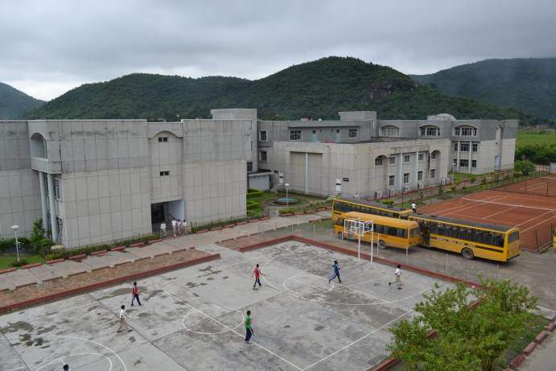

Sarala Birla Gyan Jyoti
Contents
My experiance in SBGJ
Being a part of SBGJ for the past 10 years,I have learnt a plethora of values and qualities.It will be fair to say that this school has made
me the person that I am.From my first
day as a new student
to this very day,every momment has been wonderful,even those classes where I can barely open my eyes.
Every year,every session is different and every day is a new adventure where I learn
something from my teachers,my friends,my seniors and juniors.Each day I get to make new
memories,
do various sorts of mischief,play all sorts of games and grow as a person.
Location
Located in a scenic place in North Guwahati,it is a little far away from the the main city,across the Bramhaputra.It takes an hour from my home to reach the school by bus.As it is
located in North Guwahati,winter mornings are extra foggy in the school.It is opposite Rajiv Gandhi Indoor Stadium, on National Highway-31.Our school overlooks a beautiful range of hills
which is a pleasure to just look at.
Events
Sarala Birla Gyan Jyoti organises a lot if events - from Symphony to Inter-School Taekwondo Competition,each one better than the previous one.
Our school likes to celebrate all festivals
with a grand assembly.Whether its Santa Claus distributing chocolates to the students right after the students recreate
the nativity scene or celebrating Magh Bihu by lighting the
Meji,each event or celebration has managed to make a significant mark in my memory lane.Form Evenings,Literary Fests,Sankardev Tithi,Hindi Divas,Rhino Fest are just a few of the competitions
and events organised by our school.
Various workshops are frequently held at the school teaching us about a number of things like fire evacuation,stuff we should know to be a successful commercial writer,climate
crisis and its impacts and a lot more.
Our school has a very special and intimate way to organise the Farewell for the batch of Class 12.My sister celebrated her Farewell this year and it was the most excited she has ever been.
She seemed to enjoy every moment of it-from the photobooth to the short plays and games organised by the class 11.
Gallery

Our School

Me and my best friend Prisha sharing a goofy momment during an experiment.

A fusion dance of Bharatnatyam and Sattriya.

With my class (8D) on the occasion of Saraswati Puja on 29th January 2020.

With my best friends,Anuja and Anchita and my class teacher,Richa ma'am during the Magh Bihu celebration on 13th January 2020.

On Children's Day 2019.